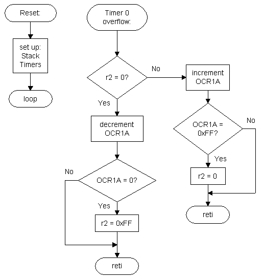

This example uses the Timer 1 PWM mode to make an LED sweep through different brightness levels. The LED shall reach its full brightness after 1 second. After another second it shall be off again and so on. The PWM resolution is 8 bits. A second timer (Timer 0) os used to update the pwm value 256 times per second. Therefore the whole pwm range will be gone through once per second. First second up-couting, second one down-counting and so on.
The LED is connected to the PWM output pin OC1 with anode to Vcc and cathode via a current limiting resistor to the output pin. That means that the LED is switched on when the output pin is low (if you have an STK500 just connect one of the LEDs to the output compare pin) and we need an inverted PWM.
We're using two timers and a flag register for this. The flag register does nothing but signal if the LED is currently getting brighter or not. Let's choose r2 for this. If it is cleared (=0), the LED is getting less power over time (OC1 value is decreasing). If it is set (=0xFF), the LED is getting brighter (OC1 value is increasing).
All this can be done interrupt driven. After setting up the cpu and the timers nothing needs to be done:

The AVR (AT90S2313) shall run at 7.3728 MHz
As we need to go through 256 PWM settings (8-bit range) within one second, we need to set up timer 0 as follows:
- 1 sec/256 = 0.00390625 sec; at 7.3728 MHz this equals 28800 cycles
- for 28800 cycles we'll need a prescaler of 1024 or 256 (28800 / 1024 = 28.125; 28800 / 256 = 112.5; 28800 / 64 = 450 which is out of 8-bit range). Let's choose 256.
- As the timer is up-counting, we need to set TCNT0 to (256 - 113 =) 143 every time the Timer 0 overflow ISR is called. Unfortunately, timer 0 does not support an output compare mode.
Timer 1 is responsible for generating the PWM output for the LED.
- For simple PWM output we don't need a prescaler.
- To enable inverted PWM operation of timer 1, we need to set COM1A1 and COM1A0 in TCCR1A.
- The resolution shall be 8 bits. For an LED this doesn't really matter, we could also choose a higher resolution. But 8 bits require less calculations at runtime. That means that the PWM10 bit in TCCR1A has to be set, while PWM11 is cleared.
TCCR1B has to be set to 1 for enabling the timer 1 clock.
Remember to include 2313def.inc from a path that works on your system. With the one from my example it most probably won't work. Here's the code, with enough comments to make everything clear.